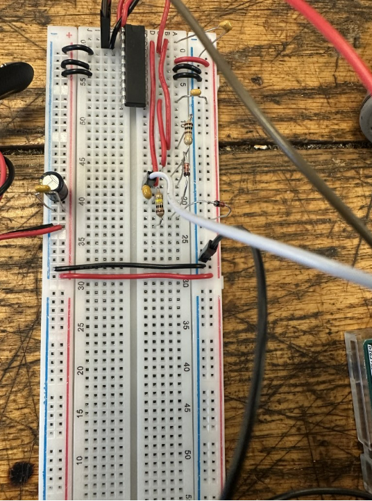
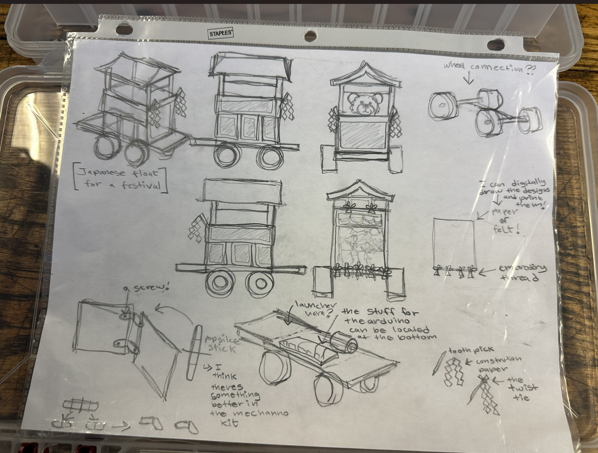
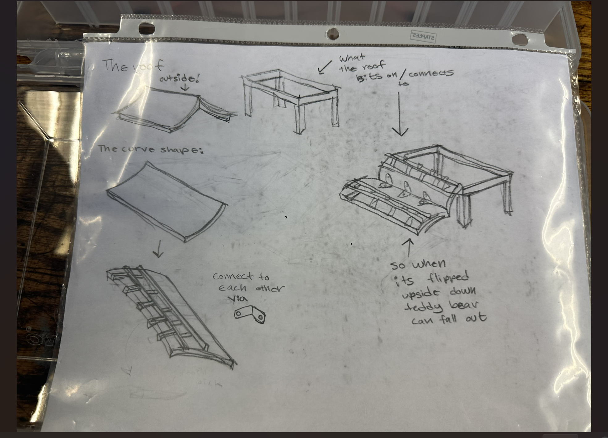
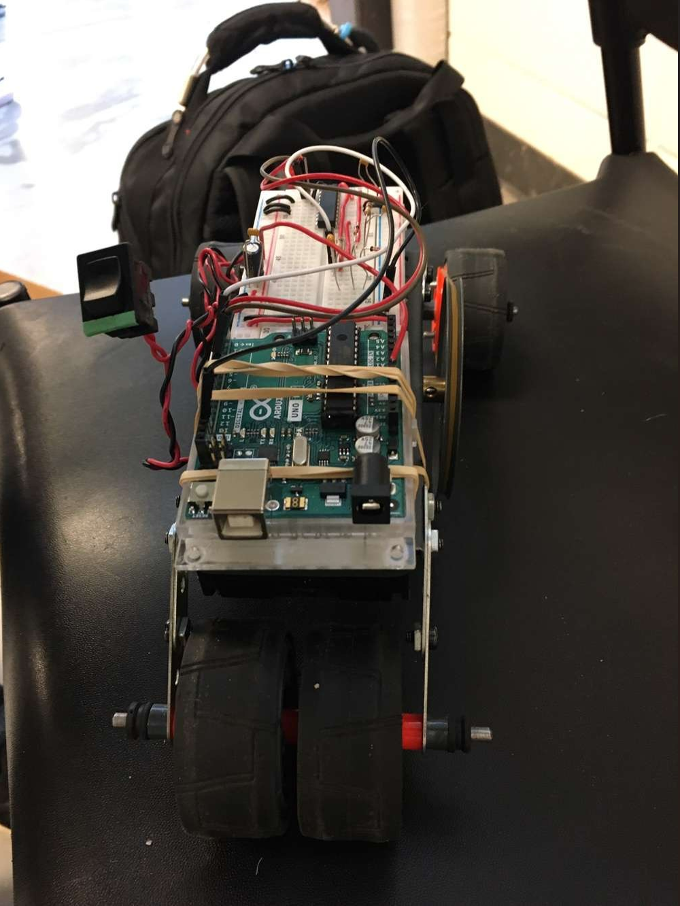
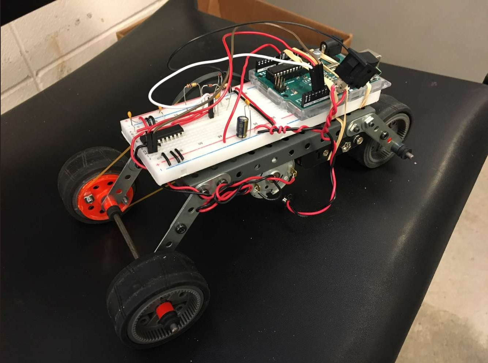
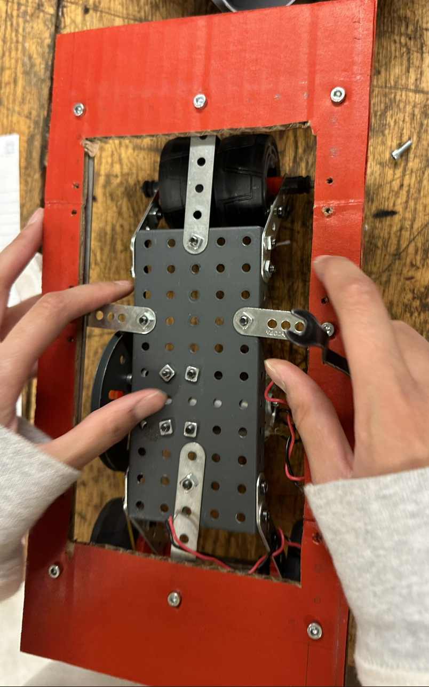
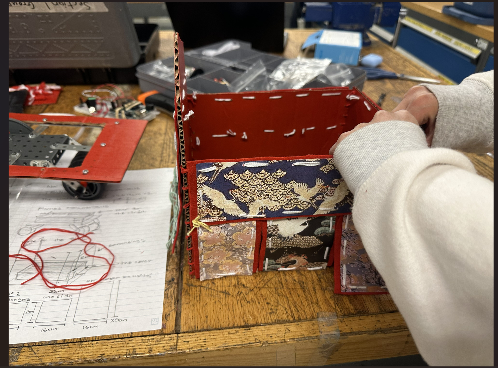
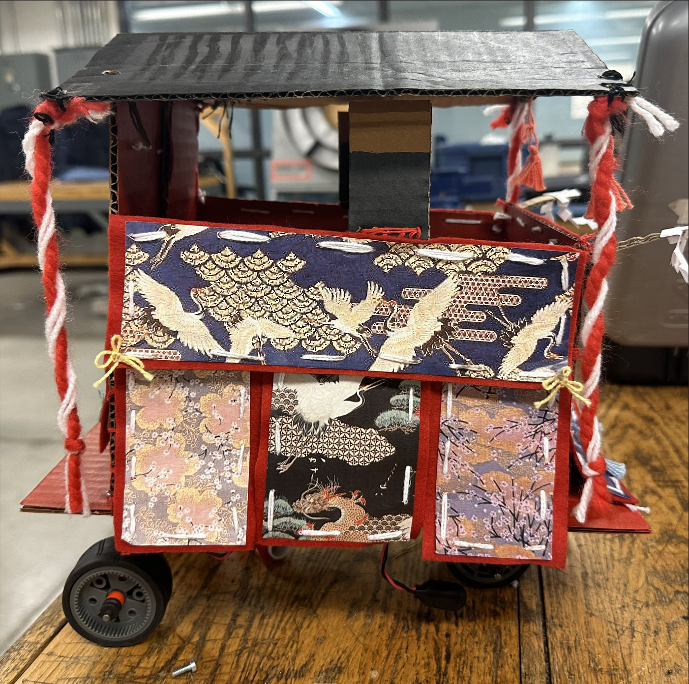
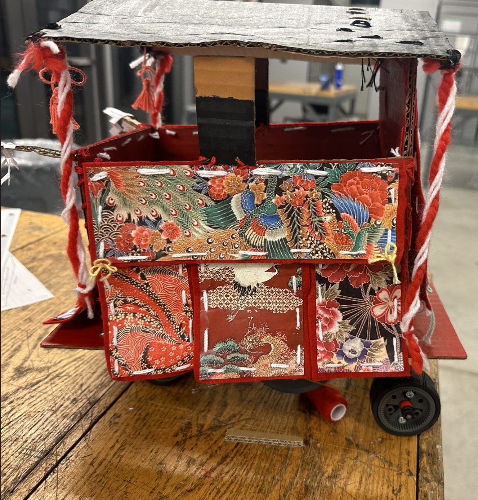
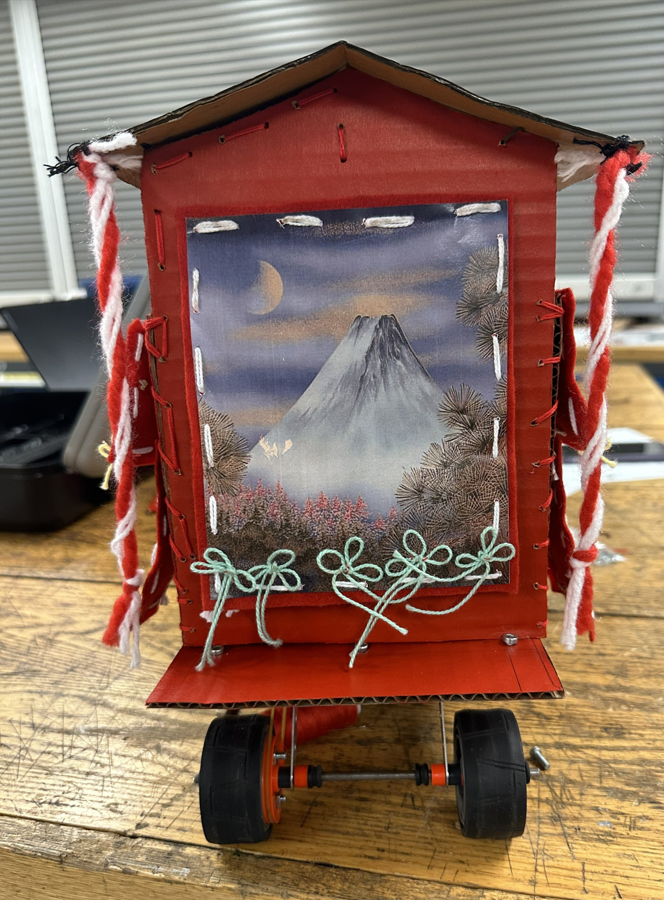

University Course Design Projects:
Engineering Design I: Teddy Bear WheelChair (Robotic Device)
In our first-year design course (ENGG*1100), my interdisciplinary team and I were tasked with designing, building, and coding a wheelchair for a teddy bear.
The project was both fun and challenging as we had to ensure the wheelchair could complete various tests to assess its performance and accuracy. One of the most
interesting parts of the project was a target-practice test, where we had to integrate a ping-pong projectile system into the design. It was a great way to apply
our knowledge and work together as a team.
Building the Mechanical Chassis of the Teddy Bear Wheel Chair (Robotic Device)

Arranging the Breadboard and Components
First, I placed the motor driver IC on the breadboard just as it appears in the picture above. I make sure it’s positioned in a central location on the breadboard to
easily connect it to other components. Then, I grab some jumper wires and start connecting the Arduino to the breadboard. I usually like to use different colors for
different purposes—red for power, black for ground, and other colors for signal lines, which helps me keep track of the connections more easily.
Connecting the Motor
Next, I attached the motor to the motor driver. I double-checked the motor’s documentation to make sure I’m aware of its current and voltage requirements.
This ensures I make the connections securely and avoid any potential short circuits or damage to the motor and driver. I connect the motor leads to the output terminals of
the motor driver, carefully noting the polarity to ensure correct directional movement.
Power Connections
Finally, I connected the battery clip to the breadboard. I plugged the red wire into the breadboard’s positive rail and the black wire into the negative rail.
I then used jumper wires to extend power from the breadboard’s power rails to both the Arduino and the motor driver IC. It’s crucial to make sure that both components
received the correct voltage; for the Arduino, it’s typically 5V, and the motor driver’s voltage varied depending on the motor’s specifications.


These sketches are a rough look on how the final product was going to look like.


Initially, the vehicle was powered directly by a battery source, but we observed that we could enhance the setup. To do this, we decided to reroute one of
the red wires. Originally, this wire was connected directly to the battery. We changed its connection point on the breadboard to a different slot specifically
meant for a stable voltage supply.
This alteration was crucial because it allowed us to better manage the power distribution across the vehicle’s circuit. By connecting the red wire to a voltage
slot on the breadboard, we effectively centralized the power distribution, which helped in stabilizing the motor operation and the overall functionality of the vehicle.
It’s a simple change, but it makes the vehicle more reliable because the voltage regulation is more consistent.
After making this change, we thoroughly tested the vehicle to ensure it operated correctly. We wanted to be certain that it could move back and forth reliably,
which it did, proving our modification was successful. This was a great relief and a point of satisfaction for us, as it confirmed our understanding and application
of basic electronic and power distribution principles.

Chassis and Plates: The chassis is built from metal plates with multiple holes. These perforations allow me to easily adjust and align the motor and other components
for optimal placement.
Motor Installation: I’ve mounted the motor using metal brackets to ensure it stays securely in place. This is crucial to avoid vibrations or misalignments that could
hamper performance.
Wiring: There are several wires visible, connected to the motor and potentially other parts. I’ve taken care to route and secure these wires to prevent any interference
or damage during the robot’s operation.
Hardware: I’ve used screws and bolts to assemble the plates and secure the motor. Choosing the right hardware is essential to maintain the structural integrity
of the vehicle.
Wheels and Axles: The wheels are partially visible, and I’ve carefully aligned their axles to ensure smooth movement and steering.


I painted each individual piece as well as stiched some of the printed images on to the cardboard pieces with yarn.
Final Product:
Front View

Side View #1

Side View #2

Back View

To make the launcher functional, I used a small spring-loaded mechanism, allowing the ping pong balls to be loaded into a tube or slot. The trigger mechanism is
attached to the easy-to-reach button.
For power, since it’s a robotic device, I integrated the launcher with the existing electrical system, using a small motor to automate the shooting process. I’d ensure
that the wiring is neat and hidden, routed through the back of the chair, and stitched along the edges of the wheelchair frame to keep the aesthetic clean.
Lastly, I tested the alignment and made any necessary adjustments to make sure the launcher is stable and fires the ping pong balls smoothly, without compromising the
wheelchair’s mobility or the overall balance of the device.